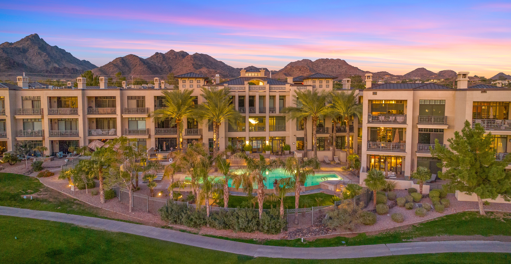
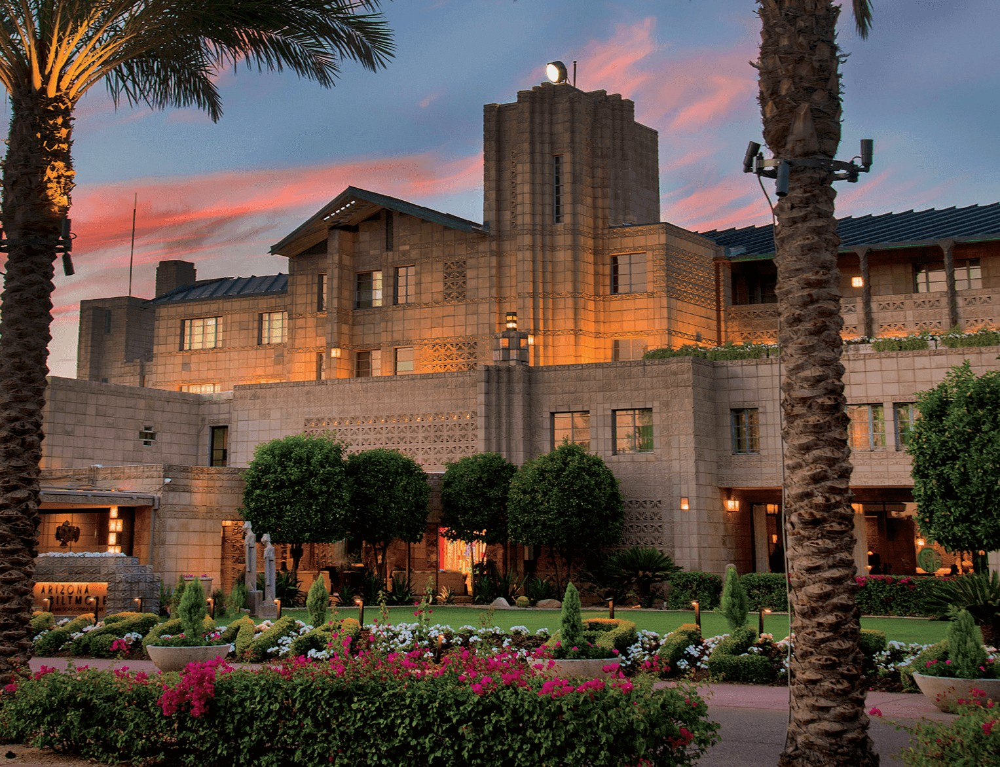

Biltmore Real Estate: Homes and Condos in Phoenix's Storied Resort Neighborhood
Welcome to Biltmore
Nearly a century of storied luxury around the Arizona Biltmore HotelWhat to Love
- 36 holes of golf at the Arizona Biltmore Golf Club
- Walkable to Biltmore Fashion Park's shops and restaurants
- Historic Wrigley Mansion overlooking the estates
- Central location minutes from Scottsdale and Downtown Phoenix
What is the Biltmore area known for?
The Biltmore is one of central Phoenix's most prestigious addresses, centered on the historic Arizona Biltmore Hotel near 24th Street and Camelback Road. Opened in 1929 and designed by Albert Chase McArthur with input from Frank Lloyd Wright, the resort earned the nickname "Jewel of the Desert" and remains the anchor landmark for the surrounding neighborhood.
Unlike Scottsdale's newer master-planned communities, the Biltmore developed around the resort and its golf courses over nearly a century, resulting in a mix of vintage character and modern luxury within walking distance of upscale shopping and dining.
What types of homes are available in the Biltmore?
The Biltmore area includes more than 2,200 single-family homes across the Arizona Biltmore Estates neighborhoods, alongside high-rise and mid-rise condominiums, gated patio homes, and townhomes.
Condo buyers have several established communities to choose from, including Biltmore Courts, the Arizona Biltmore Hotel Villas, and Two Biltmore Estates, many offering lock-and-leave living with skyline or golf course views.
What golf and amenities define the Biltmore?
The Arizona Biltmore Golf Club offers 36 holes across two courses: the Adobe Course, redesigned by Tom Lehman, and the Links Course, designed by Bill Johnston, both playing to par 71.
Biltmore Fashion Park anchors the neighborhood's retail and dining scene with upscale boutiques and restaurants, all within walking distance of many condo buildings and estates.
What restaurants and spa define the Biltmore's vibe?
Geordi's at Wrigley Mansion offers fine dining with panoramic views from the hillside mansion, while Biltmore Fashion Park is home to The Capital Grille and other white-tablecloth restaurants. Christopher's, a longtime Biltmore-area fine-dining name, rounds out the neighborhood's upscale dining reputation.
The Arizona Biltmore Hotel's Spa Biltmore: Terra Luna offers desert-inspired treatments across a dozen treatment rooms, giving residents resort-level spa access without leaving the neighborhood.
What landmarks define the Biltmore?
Beyond the Arizona Biltmore Hotel itself, the historic Wrigley Mansion sits on a hill overlooking the Biltmore Estates, offering panoramic views and now operating as a dining and event destination.
The neighborhood's mature, lushly landscaped streets and golf-course frontage set it apart from the more desert-forward landscaping found in North Scottsdale.
What should buyers know before purchasing in the Biltmore?
Because the Biltmore mixes condo towers, patio homes, and single-family estates across many decades of construction, buyers should confirm each building or community's HOA rules before purchasing.
The area's central location, minutes from Old Town Scottsdale, Downtown Phoenix, and Sky Harbor Airport, makes it a popular choice for buyers who want walkable luxury without committing to a single-city address.


Common Questions
What is the Arizona Biltmore Hotel?
The Arizona Biltmore Hotel is a historic resort near 24th Street and Camelback Road, opened in 1929 and designed by Albert Chase McArthur with design input from Frank Lloyd Wright. It anchors the surrounding Biltmore neighborhood and is often called the "Jewel of the Desert."
Are there condos in the Biltmore area?
Yes. The Biltmore includes several established condo communities such as Biltmore Courts, the Arizona Biltmore Hotel Villas, and Two Biltmore Estates, in addition to single-family homes and patio homes.
How many golf courses are in the Biltmore?
The Arizona Biltmore Golf Club offers 36 holes across two courses, the Adobe Course and the Links Course, both playing to par 71.
How far is the Biltmore from Old Town Scottsdale?
The Biltmore is generally a 15- to 20-minute drive from Old Town Scottsdale, depending on traffic, and is also close to Downtown Phoenix and Sky Harbor International Airport.
What restaurants are near the Biltmore?
Geordi's at Wrigley Mansion, The Capital Grille at Biltmore Fashion Park, and Christopher's are among the neighborhood's best-known upscale restaurants.
Is there a spa in the Biltmore?
Yes. The Arizona Biltmore Hotel's Spa Biltmore: Terra Luna offers desert-inspired treatments across a dozen treatment rooms, open to hotel guests and spa visitors.


Considering a Move to Biltmore?
Call 480-734-0870 or email laura@laurajorden.com for current listings and market data.
Contact Laura